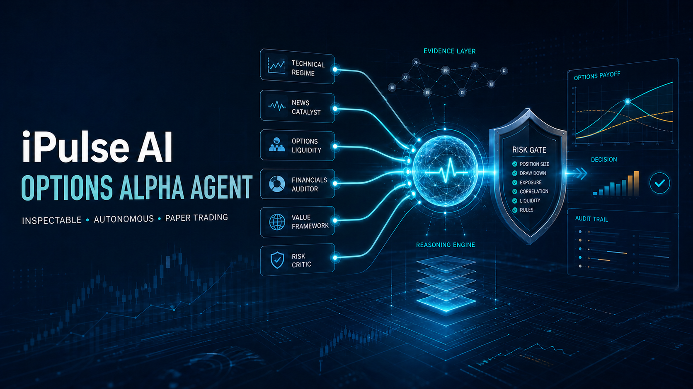

49-second silent visual walkthrough: architecture, risk gates, verified account baseline, and refusal evidence.

Open Agentic Investment Research Platform
SPY decision trace
Recorded 2026-08-28T06:42:48.341497+00:00
WAIT
Advisor consensus chose WAIT: At least one independent advisor issued a hard veto.
Consensus WAIT
Confidence 1
Operational safety VETO
Confidence 1
Operational safety VETO
Judge overview
Seven-slide judge deck
Inspect the complete proof path
AI proposes. Deterministic risk decides. Alpaca executes only in the paper environment.
Independent advisors
Technical Regime
CALLConfidence 0.8787100103199176
Fast and slow momentum agree in an acceptable volatility regime.
Evidence
- market:fast_return_pct
- market:slow_return_pct
- market:realized_volatility_pct
Contrary evidence
- Momentum can reverse before a daily-bar regime filter reacts.
Invalidation
- Fast and slow returns no longer agree in direction.
- Realized volatility rises above 45 percent.
News Catalyst
WAITConfidence 0.55
Recent timestamped catalysts were evaluated without overriding market evidence.
Evidence
- news:alpaca:61473424
Contrary evidence
- Headline sentiment may not capture priced-in expectations.
Invalidation
- A material contradictory catalyst is published.
Options Liquidity
CALLConfidence 0.8896800825593397
The selected contract is directionally consistent and inside the spread and loss budget.
Evidence
- option:symbol
- option:limit_price
- option:spread_pct
Contrary evidence
- Indicative option quotes may differ from executable OPRA quotes.
Invalidation
- Spread widens above 8 percent.
- One-contract premium exceeds USD 500.
Financials Forensic Auditor
CALLConfidence 0.78
Fund cost, scale, diversification, and concentration pass the structural audit.
Evidence
- fund:expense_ratio_pct
- fund:annual_turnover_pct
- fund:total_assets_usd
- fund:holdings_count
- fund:top_10_weight_pct
- fund:largest_holding_weight_pct
- fund:largest_sector_weight_pct
- fund:cash_weight_pct
Contrary evidence
- ETF structure does not determine short-horizon direction.
Invalidation
- Top-ten concentration rises above 55 percent.
- Fund assets fall below USD 500 million.
- Expense ratio rises above 0.75 percent.
Value Framework
ABSTAINConfidence 0
No normalized valuation evidence was supplied.
Evidence
- None recorded
Contrary evidence
- None recorded
Invalidation
- None recorded
Risk Critic
WAITConfidence 1
Operational risk conditions forbid a new order.
Evidence
- ops:market_open
- ops:quote_age_seconds
- ops:daily_trade_count
- ops:duplicate_signal
- ops:open_order_count
- ops:minutes_since_last_trade
Contrary evidence
- Regular market session is closed.
- Option quote is stale.
Invalidation
- Every operational safety reason is cleared.
Consensus and deterministic safety
Consensus
At least one independent advisor issued a hard veto.
Hard vetoes
- risk_critic: Operational risk conditions forbid a new order.
Operational safety
Execution forbidden
- Regular market session is closed.
- Option quote is stale.
Competition paper account
Paper P&L
$0.00
0.0% return from the required $100,000 starting balance.
Account baseline
READY
Options level 3 · 0 positions · 0 filled orders
- None recorded
Evidence catalog
| ID | Category | Value | Source | As of |
|---|---|---|---|---|
| market:fast_return_pct | technical | 0.6841 % | alpaca | 2026-08-28T06:42:48.340566+00:00 |
| market:slow_return_pct | technical | 1.1224 % | alpaca | 2026-08-28T06:42:48.340566+00:00 |
| market:realized_volatility_pct | technical | 10.4883 % annualized | alpaca | 2026-08-28T06:42:48.340566+00:00 |
| option:symbol | options | SPY260904C00772000 | alpaca | 2026-08-28T06:42:48.340566+00:00 |
| option:limit_price | options | 4.84 USD | alpaca | 2026-08-28T06:42:48.340566+00:00 |
| option:spread_pct | options | 0.2064 % | alpaca | 2026-08-28T06:42:48.340566+00:00 |
| option:signal_confidence | options | 0.8787 0-1 | ipulse | 2026-08-28T06:42:48.340566+00:00 |
| ops:market_open | operations | False | alpaca | 2026-08-28T06:42:48.340566+00:00 |
| ops:quote_age_seconds | operations | 38,568.4091 seconds | ipulse | 2026-08-28T06:42:48.340566+00:00 |
| ops:daily_trade_count | operations | 0 count | alpaca | 2026-08-28T06:42:48.340566+00:00 |
| ops:duplicate_signal | operations | False | ipulse | 2026-08-28T06:42:48.340566+00:00 |
| ops:open_order_count | operations | 0 count | alpaca | 2026-08-28T06:42:48.340566+00:00 |
| ops:minutes_since_last_trade | operations | None minutes | alpaca | 2026-08-28T06:42:48.340566+00:00 |
| news:alpaca:61473424 | news | {"headline": "Nvidia's Unusual Move Answers AI Trade\u2019s Key Question; $40 Trillion US Debt Bomb Ticks; Key Fed Speech Awaited", "sentiment_score": 0.0} | alpaca_news:benzinga | 2026-08-27T17:00:02+00:00 |
| fund:expense_ratio_pct | financials | 0.095 % | ipulse-bigquery:fundsnap_422fc623-cf39-5aa4-a933-e09381a5da7e | 2026-08-26 |
| fund:annual_turnover_pct | financials | 2 % | ipulse-bigquery:fundsnap_422fc623-cf39-5aa4-a933-e09381a5da7e | 2026-08-26 |
| fund:total_assets_usd | financials | 807,460,814,119 USD | ipulse-bigquery:fundsnap_422fc623-cf39-5aa4-a933-e09381a5da7e | 2026-08-26 |
| fund:holdings_count | financials | 50 count | ipulse-bigquery:fundsnap_422fc623-cf39-5aa4-a933-e09381a5da7e | 2026-08-26 |
| fund:top_10_weight_pct | financials | 37.0293 % | ipulse-bigquery:fundsnap_422fc623-cf39-5aa4-a933-e09381a5da7e | 2026-08-26 |
| fund:largest_holding_weight_pct | financials | 7.6625 % | ipulse-bigquery:fundsnap_422fc623-cf39-5aa4-a933-e09381a5da7e | 2026-08-26 |
| fund:largest_sector_weight_pct | financials | 37.5002 % | ipulse-bigquery:fundsnap_422fc623-cf39-5aa4-a933-e09381a5da7e | 2026-08-26 |
| fund:cash_weight_pct | financials | 0.1036 % | ipulse-bigquery:fundsnap_422fc623-cf39-5aa4-a933-e09381a5da7e | 2026-08-26 |